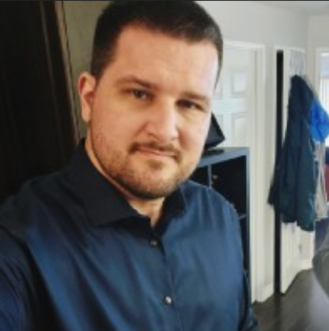

Security Analyst in Training · Forensics · Threat Detection
From biomedical research to the front lines of digital defence, I bring an investigator's mindset, a scientist's precision, and hands-on technical training to every security challenge.
I'm a second-year student in the Computer Security & Investigations (CSI) program at Fleming College in Peterborough, Ontario, working toward a three-year Advanced Diploma graduating in 2027.
My path to cybersecurity started in a lab coat. I completed an Honours BSc in Biomedical Toxicology (Minor in Neuroscience) at the University of Guelph, then spent over a decade working across environmental science, analytical chemistry, toxicological research, and operations management. Every role sharpened the same core skill: finding signal in noise.
That background maps directly onto what security work demands: methodical investigation, precise documentation, and sound judgment under pressure. I'm drawn to the detection and response side of security: understanding how systems are compromised, building detection logic, and constructing evidence-based incident timelines.
Outside of academics, I play drums and classical guitar, and I'm a former competitive rower and coach. I also enjoy exploring food scenes in Peterborough and the Niagara region.
Working through ACL logic and troubleshooting authentication failures sharpened my understanding of proxy architecture and traffic filtering. This project demonstrated the direct link between policy configuration and observable log output, which is a skill central to detection engineering and security monitoring roles.
I'm actively seeking co-op placements and entry-level opportunities in cybersecurity, particularly in security operations, threat detection, and incident response. Feel free to reach out.